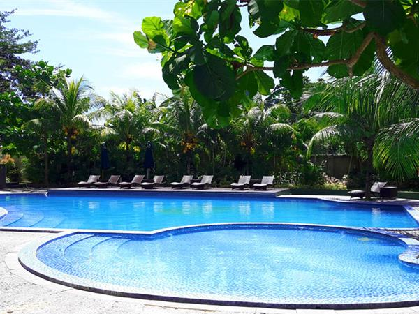
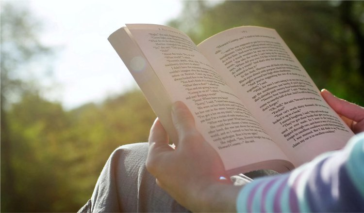

Haiii kalian! Assalamu'alaikum. Nama lengkapku Anita Lubis, kalian dapat memanggilku anita,nita, atau ita. Sebenarnya saya anak kedua dari tiga bersaudara tetapi, kakak saya (anak pertama) meninggal sewaktu dia kecil karena sakit. Saya lahir pada tanggal 14 April 2002 di Rs. Syarif hidayatullah ciputat, Tangerang selatan. Ini ada kutipan kata-kata dari saya, jangan lupa baca bagian yang ini yaa.....
Saat TK saya berangkat ke TK al-ikhlas, di tangerang selatan. Dan melanjutkan ke SDN pondok petir 1 di sawangan depok. saat SD kelas 1-2 saya berangkat sekolah masih di antar oleh ayah saya tetapi, saat saya sudah beranjak kelas 3 saya di belikan sepeda oleh orang tua saya. Jadi saya berangkat sekolah naik sepeda, karena umur saya dan adek saya hanya beda 2 tahun. saat dia kelas 1, saya membonceng adek saya naik sepeda untuk berangkat ke sekolah. Sampai saya lulus dari SD.
Alhamdulillah nem SD saya tinggi, tadinya ayah saya ingin memasukkan saya ke pesantren tetapi, mamah saya tidak setuju karena saya masih terlalu kecil. tidak jauh dari rumah dan SD saya terdapat SMP islam PLUS AZ-Zahra. Akhirnya orang tua saya mendaftarkan saya di sekolah tersebut. Sebenarnya jika dari nem saya bisa masuk negri, tetapi orang tua saya mendaftarkan saya ke sekolah islam menurut mereka, di umur saya yang beranjak dari anak-anak ke remeja itu harus di bekali ilmu agama yang lebih mendalam terlebih dahulu agar,saat dewasa nanti ia bisa membedakan yang baik dan buruk bagi dirinya.


Setelah saya lulus SMP saya bingung ingin masuk sma yang mana. ketika saya tau ada kakak kelas smp saya yang masuk di SMK-SMAK Bogor. Setelah itu saya mencari tahu tentang sekolah tersebut. Dan saya mendaftar di sekolah tersebut. tetapi tidak hanya saya dari smp yang mendaftar, ada 4 teman saya yang lain. kami mendaftar melalui jalur rapot. setelah ada pengumuman ternyata, hanya 3 dari kami yang di terima, termasuk saya.

Sejak SMP saya sudah mempunyai hobby berenang dan mendengarkan music. saya paling menyukai wahana-wahana yang menantang diri saya sendiri. seperti jika di kolam berenang macam-macam waterboom saya coba. tetapi, ketika saya sekolah di SMAKBO hobby saya pun bertambah yaitu, membaca buku tetapi, tidak semua buku. hanya buku-buku pelajaran yang terdapat gambar tidak semua full kata-kata.
Mengenai cita-cita saya karena, saya menuntut ilmu di SMK-SMAK Bogor (SMAKBO). cita-cita saya tidak jauh dari menjadi analis kimia yang jujur,sopan,dan mengerti aturan. saat lulus dari SMAKBO saya ingin melanjutkan kuliah di Institut Teknologi Bandung(ITB). saya berniat mengambil jurusan FTTM(fakultas teknik petambangan dan perminyakan) atau studi kimia, diantara 2 itulah pokoknya doain aja yaa.... jika, bekerja saya ingin sekali bekerja di salah satu perusahaan perminyakan di Dubai.
saya pikir sudah cukup cerita mengenai biodata dan kehidupan saya hihihihi....! Waalaikumsalam.
:) jangan lupa di fhallow yaa :v